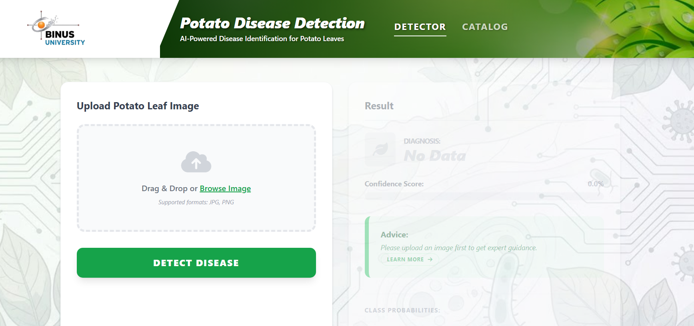

Potato Disease UI
HTML, CSS, JavaScript
Problem: Farmers and students need an easy way to learn about potato leaf diseases.
Solution: A multi-page web interface with a main page and a disease catalog.
My contribution: Designed and built the interface, including the catalog page.